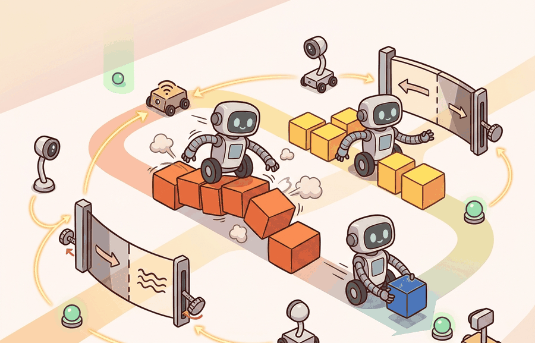

"One environment teaches. Thirty-two environments running in lockstep teach thirty-two times faster, and every lesson is already batched."
A Throughput-Conscious Trainer

This section assumes familiarity with Gymnasium observation and action spaces introduced in section 10.2. The vectorization patterns here are extended in section 17.1, which scales the same batched rollout technique to GPU-accelerated parallel simulation across thousands of sub-environments. The autoreset semantics and bootstrap-target pitfalls covered here also recur in section 14.2, where value-function targets must be computed from terminal observations rather than from the reset observations that vectorized environments return in their place.
A robot policy trained on a single simulated arm learns painfully slowly. Run 32 copies of that arm in parallel, stack their observations into one batch tensor, and a single GPU forward pass consumes all 32 transitions at once (Figure 10.4A). Training that took hours now takes minutes. This is the practical power behind every competitive locomotion and manipulation result in the current literature.
Vectorized environments make that parallelism safe and auditable. Wrappers let you reshape observations, clip rewards, or inject time signals without touching the base simulator. Together they define the exact contract your policy signs. Here you will build a wrapper stack, spin up a vectorized rollout, and learn the autoreset pitfall that silently corrupts value targets if you are not watching for it.
What This Section Builds
Wrappers and vectorized environments change the contract around a base task. Wrappers change what an environment exposes without rewriting the base simulator. Vector environments run several copies of a task behind one batched API. A single-environment CartPole training run typically needs around 500,000 steps to converge; a 32-environment vectorized run collects those same 500,000 steps in roughly 1/32 the wall-clock time, because every GPU forward pass consumes 32 transitions at once instead of one.
The goal is to keep throughput improvements honest. A wrapper stack should be declared, ordered, and logged, and a vectorized rollout should preserve per-environment termination, truncation, reward, and info fields.
This environment is ready when another reader can reset it with the same seed, inspect vectorized reset semantics, wrapper order, batch shape, and per-environment info records, reproduce the same rollout, and recover the same logged evidence.
Theory
A wrapper is an environment transformation. It can alter observations, actions, rewards, metadata, or the behavior of reset and step. The base task remains underneath, but the policy sees the wrapped contract.
A vector environment batches several environment copies so the learner collects experience faster. Gymnasium vector envs return arrays for rewards, terminations, and truncations with one element per sub-environment. Observations are batched according to the observation space, which is why space design from Section 10.2 matters before vectorization.
In embodied AI, the wrapper contract is not just a software convenience. A real robot's sensors have fixed ranges, its actuators accept commands in specific units, and its safety system may cut power if a reward signal drives joint torques beyond hardware limits. A wrapper that rescales torque commands or clips force observations must match the physical actuator's operating envelope exactly. The wrong scaling silently trains the policy in a fantasy space, and the mismatch only surfaces when the policy runs on the physical arm and commands forces the joints cannot produce or cannot safely stop.
Figure 10.4B makes this two-part structure concrete: on the left, a wrapper stack where actions travel down to the base simulator and observations travel back up through each transform; on the right, the same wrapped environment replicated N times behind a single batched vector API. The mechanism is straightforward: every Gymnasium wrapper subclasses gym.Wrapper and overrides only the methods it transforms. When your code calls wrapped.step(action), Python calls the outermost wrapper's step, which applies its action transform, then delegates to the next wrapper's step, and so on until the innermost call reaches the base simulator. The returned observation then travels back up through each wrapper's observation method, accumulating transformations in reverse. The spaces are updated at construction time so the policy always sees the final, post-wrapper space.
A wrapper that ships the wrong unit scaling to a physical joint does not produce a suboptimal policy; it produces a policy that was never trained for the hardware it will run on.
A common assumption is that wrapper order does not matter because each wrapper is "just a transformation" and the final result is the same regardless of sequence. In embodied AI this assumption causes silent, catastrophic errors: applying an action-clipping wrapper before an action-rescaling wrapper clips in the original unit range and then rescales, whereas applying rescaling first clips after scaling, sending entirely different torque magnitudes to the simulated or physical joint. The correct mental model is that wrappers form an ordered pipeline, not a commutative set; the policy sees the composition applied from outermost to innermost on inputs and innermost to outermost on outputs, so swapping any two wrappers changes the effective contract and can train a policy that commands forces a real actuator cannot safely produce.
Think of wrappers as a visible pipeline around the simulator and vectorization as a batch dimension around that pipeline. The audit question is always the same: which contract did the policy actually see?
Worked Example
Code Fragment 10.4.1 applies a simple Gymnasium observation wrapper. The wrapper adds time awareness to the observation, so the policy sees a five-value observation instead of the base four-value CartPole state.
# Wrap an environment so the observation includes elapsed time.
# The policy sees the wrapped observation space, not the base one.
import gymnasium as gym
from gymnasium.wrappers import TimeAwareObservation
env = gym.make("CartPole-v1")
wrapped = TimeAwareObservation(env)
observation, info = wrapped.reset(seed=13)
wrapped.action_space.seed(13)
action = wrapped.action_space.sample()
next_observation, reward, terminated, truncated, info = wrapped.step(action)
print(wrapped.observation_space.shape)
print(next_observation.shape, float(reward), terminated, truncated)
wrapped.close()The expected output shows the observation shape grow from the usual CartPole size to five entries after the wrapper is applied. The second line confirms that the wrapped environment still returns a legal step tuple, but the policy is now receiving time information as part of its observation.
TimeAwareObservation changes the observation contract from four values to five. A result table that omits this wrapper would be incomplete because the policy received extra time information.Gymnasium wrappers replace custom preprocessing glue with named, inspectable transformations. The shortcut is safe only when the wrapper order is saved, because reward clipping before logging and reward clipping after logging produce different evidence.
Practical Recipe
- Write the base environment contract before adding wrappers.
- Add one wrapper at a time and record how it changes spaces, rewards, or info.
- Use vector environments when rollout throughput, not environment semantics, is the bottleneck.
- Interpret vector outputs per sub-environment, not as one scalar episode.
- Log autoreset mode and final observations when using vector rollouts that reset sub-environments automatically.
A usable environment wrapper for this section records vectorized reset semantics, wrapper order, batch shape, and per-environment info records, plus observation and action spaces, reset seed, info dictionary fields, and reproducible evidence artifacts.
The common mistake is comparing a wrapped run with an unwrapped run as if only the policy changed. If one run clips rewards, normalizes observations, or adds time features, the comparison is no longer construct matched.
A manipulation lab might vectorize 32 simulated arms to collect rollouts faster, then wrap observations with normalization and action scaling. The result artifact should list both the vector environment parameters and the wrapper stack, because both affect what the policy learned.
Real-World Application: OpenAI Five (Dota 2)
OpenAI Five trained its Dota 2 agents by running thousands of game instances in parallel and stepping them through a vectorized rollout API, the same batch-the-contract pattern shown here scaled to a production cluster. Custom wrappers reshaped the raw game state into the fixed observation vector the policy expected and clipped reward shaping signals before they reached the learner. The throughput from this vectorization let the system consume the equivalent of hundreds of years of self-play per day, which is what made beating professional teams feasible.
When vectorized environments; wrappers feels abstract, ask what would be different in the next frame of video, the next robot state, or the next safety margin.
Heterogeneous wrapper stacks across massive parallelism. Isaac Lab (NVIDIA, 2024) demonstrated vectorized environments at 100,000+ parallel instances on a single GPU, but exposed a new wrapper correctness problem: a single misconfigured normalization layer corrupts every sub-environment simultaneously with no observable reward drop until transfer. The 2024 Isaac Lab paper (Mittal et al., "Isaac Lab: Towards Unified and Modular Robotic Learning," arXiv 2024) introduced per-environment telemetry hooks that independently verify each wrapper's output distribution during training rather than at evaluation time.
Adaptive wrapper composition for sim-to-real transfer. Rather than fixing a static wrapper stack at training time, work from the Berkeley Robot Learning Lab (2024-2025) explores meta-wrappers that adjust observation noise, action latency injection, and domain randomization ranges on-the-fly based on sim-to-real distribution shift signals. This connects wrapper design directly to online transfer monitoring instead of treating it as a one-time design decision.
Formal wrapper verification. The ManiSkill3 benchmark (Gu et al., 2025) surfaces a category of wrapper bugs that are correct in isolation but produce invalid compositions: for example, a time-limit wrapper applied outside a frame-skip wrapper changes the effective episode horizon in a way that neither wrapper's unit tests catch. Current work in this space is developing type-level contracts for wrapper pipelines so that illegal compositions are rejected at environment construction time rather than discovered via corrupted gradients.
Open problem. No principled method exists for automatically ordering a set of candidate wrappers to minimize the sim-to-real gap for a given task. Given $k$ wrappers and $k!$ possible orderings, the space is too large to search exhaustively, yet the ordering affects both learning dynamics and transfer fidelity. A tractable subproblem: can a learned "wrapper scheduler" that conditions on early training diagnostics select an ordering that outperforms the expert-designed default without requiring hardware rollouts for each candidate ordering?
Can you write the wrapper stack in order and explain the shape of one batched observation, reward, termination, and truncation array? If not, the vectorized experiment is not yet inspectable.
Wrappers are powerful because they separate task dynamics from interface transformations. That separation also creates a risk: the experiment may claim to evaluate a base environment while the policy actually saw normalized observations, clipped rewards, time features, action rescaling, and a time-limit wrapper.
Vector environments add another layer. They make the rollout batch look like one object, but each sub-environment still has its own episode boundary. Evaluation code should preserve that identity so one unstable instance does not disappear inside an average.
| Tool or Library | Role in the Topic | Builder Advice |
|---|---|---|
ObservationWrapper | Observation transformation | Use for time features, resizing, normalization, or sensor projection. |
ActionWrapper | Action transformation | Use for rescaling, clipping, or translating policy actions into controller commands. |
RewardWrapper | Reward transformation | Use with caution, because it changes the training signal. |
SyncVectorEnv | Batched rollout in one process | Use for simple debugging and deterministic batched smoke tests. |
AsyncVectorEnv | Batched rollout across processes | Use when environment stepping is expensive enough to justify multiprocessing complexity. |
One subtlety in vectorized rollouts is worth examining before touching code. When a sub-environment inside a SyncVectorEnv or AsyncVectorEnv reaches a terminal state, Gymnasium immediately resets it and places the first observation of the new episode into the returned batch. This behavior is called silent autoreset overwrite. It is the most common source of corrupted value targets in vectorized training. Gymnasium moves the terminal observation into infos["final_observation"] for that sub-environment index. Consider a concrete case: three CartPole environments run together, and environment index 1 falls after 12 steps. At step 12, envs.step(actions) returns the reset observation for index 1, not the observation where the pole fell. Code that reads observations[1] to compute a value-function bootstrap target will silently use the wrong state. The correct value comes from infos["final_observation"][1]. In a 32-environment rollout running for 1,000 steps, a CartPole episode ends roughly every 200 steps per sub-environment, meaning the policy receives around 160 corrupted bootstrap targets before a single reward curve blip is large enough to notice, so the bug trains the value function on wrong states for hundreds of updates in complete silence.
Step-Through: Autoreset and final_observation in a 3-env batch
Trace through one vectorized step where env 1 terminates. Suppose at step 11 the batch holds observations = [[ 0.01, 0.20, -0.04, -0.31], [ 0.09, 0.51, -0.21, -0.88], [-0.02, 0.10, 0.03, 0.22]] and the policy issues actions = [1, 0, 1]. We call envs.step(actions). Env 1's pole angle crosses the failure threshold, so internally Gymnasium computes its terminal observation [ 0.10, 0.30, -0.25, -0.60], then immediately resets env 1 to a fresh start such as [ 0.03, -0.01, 0.01, 0.02]. The returned batch is now observations = [[ 0.02, 0.01, -0.05, -0.05], [ 0.03, -0.01, 0.01, 0.02], [-0.01, -0.18, 0.04, 0.50]] with rewards = [1.0, 1.0, 1.0] and terminations = [False, True, False]. Notice slot 1 already shows the new episode's start, not the failure state. The true terminal state lives in infos["final_observation"][1] = [ 0.10, 0.30, -0.25, -0.60]. To bootstrap, you read terminations[1] == True, fetch infos["final_observation"][1], and feed that to the value head; using observations[1] instead would estimate the value of a brand-new pole that has nothing to do with the transition that just ended.
Think of a relay race where a runner crosses the finish line and the next runner immediately steps onto the starting block in the same lane. If you glance at that lane a moment too late, you see the fresh runner ready to go, not the exhausted finisher who just completed the lap. Vectorized autoreset works exactly the same way: the moment a sub-environment terminates, it resets and puts a brand-new starting observation in its slot. Read the batch without checking termination flags and you see the new runner, not the one whose final position you actually need for your value calculation. The finished runner's true last position is preserved in the infos record, just as a photograph taken at the exact finish line captures the real moment.
Autoreset in vectorized environments overwrites the terminal observation with the first observation of the next episode before the caller can read it. Any bootstrap, logging, or intrinsic-reward computation that reads the raw observation array at a termination step is using the wrong state. Always check infos["final_observation"] for the true last observation when terminations[i] is True.
A robust vector implementation proves the single environment first, then creates a batched version with the same wrappers. The first artifact explains semantics; the second artifact explains throughput.
- Run one unwrapped environment step and save the return shapes.
- Add wrappers and rerun the same seed to show how the contract changed.
- Create the vector environment only after the wrapper stack is fixed.
- Store per-sub-environment rewards, termination flags, truncation flags, and final info.
- Use aggregate plots only after preserving the per-environment traces.
# Step three CartPole environments through one vectorized API call.
# Rewards and ending flags retain one element per sub-environment.
import gymnasium as gym
envs = gym.make_vec("CartPole-v1", num_envs=3, vectorization_mode="sync")
observations, infos = envs.reset(seed=11)
envs.action_space.seed(11)
actions = envs.action_space.sample()
observations, rewards, terminations, truncations, infos = envs.step(actions)
print(observations.shape)
print(actions.tolist())
print(rewards.tolist())
print(terminations.tolist(), truncations.tolist())
envs.close()The expected output should be read row-wise across three sub-environments: a batched observation tensor of shape (3, 4), three sampled actions, three rewards, and one termination and truncation flag per environment. Nothing is aggregated yet, which is exactly the right interpretation for vectorized evidence.
gym.make_vec to step three environments together. The observation shape (3, 4) shows the batch dimension, and the reward and ending arrays keep one value per sub-environment.Algorithm: Vectorized Rollout with a Verified Wrapper Stack
Before reading the steps, ask yourself: if one sub-environment silently resets mid-batch and you never check the termination flags, how many training updates could pass before you notice the corrupted value targets?
Input: base environment factory $f$, wrapper list $W = [w_1, w_2, \ldots, w_k]$ in application order, number of parallel copies $N$, rollout horizon $T$, policy $\pi_\theta$
Output: per-sub-environment trajectory arrays $\{o_t^i, a_t^i, r_t^i, d_t^i, \tau_t^i\}$ for $i \in [N]$, $t \in [T]$; final-observation buffer $F$
- Construct the base environment $e_0 = f()$ and record its observation space $\mathcal{O}_0$ and action space $\mathcal{A}_0$.
- Apply wrappers in order: set $e_j = w_j(e_{j-1})$ for $j = 1, \ldots, k$. After each step record $(\mathcal{O}_j, \mathcal{A}_j)$ to confirm the contract change; abort if any wrapper leaves $\mathcal{O}_j$ or $\mathcal{A}_j$ undefined.
- Create the vector environment: $\text{VecEnv} = \text{SyncVectorEnv}([e_k^{(1)}, \ldots, e_k^{(N)}])$, where each copy is built from the fully wrapped factory.
- Reset all copies with a fixed seed $s$: obtain batch $o_0 \in \mathbb{R}^{N \times |\mathcal{O}_k|}$ and initial info dictionary $I_0$.
- For each step $t = 0, 1, \ldots, T-1$: sample or compute $a_t = \pi_\theta(o_t)$ and call $\text{VecEnv.step}(a_t)$ to receive $(o_{t+1}, r_t, d_t, \tau_t, I_t)$ where each array has shape $[N]$ (scalar fields) or $[N, \ldots]$ (observation fields).
- For each index $i$ where $d_t^i = \text{True}$: copy $I_t[\text{"final\_observation"}][i]$ into the final-observation buffer $F[i]$ before overwriting $o_{t+1}^i$ with the autoreset observation.
- Use $F[i]$ (not $o_{t+1}^i$) to compute any value-function bootstrap target $V(s_T^i)$ at episode boundaries, ensuring $\nabla_\theta$ flows through the correct terminal state.
- Accumulate per-sub-environment episode returns $G^i = \sum_t r_t^i$ and episode lengths $L^i$; never aggregate across $i$ before storing per-environment traces.
- Log the complete wrapper stack $[w_1, \ldots, w_k]$, $N$, $T$, and seed $s$ alongside the trajectory arrays so any downstream comparison uses construct-matched observations and rewards.
- Close the vector environment with $\text{VecEnv.close}()$ and verify no sub-process leaks remain before returning results.
When a vectorized run fails, the wrapper stack is the first suspect, not the policy. A concrete instance: an Isaac Lab ANYmal locomotion policy that trained cleanly in 4,096 parallel environments but collapsed on the physical ANYmal-C usually fails because an action-rescaling wrapper mapped the policy output to a joint-torque range the real Series-Elastic Actuators cannot deliver, not because Proximal Policy Optimization underfit. Isolate the cause before blaming the algorithm: pin one sub-environment, replay its logged action stream through the wrapper chain, and compare the post-wrapper torque command against the actuator's rated peak (ANYmal-C joints saturate near 80 Nm). If the wrapper emits commands above that ceiling, the bug is the contract, not the gradient. This single-environment replay turns a disappointing batched rollout into a reusable diagnostic asset.
Wrappers change the contract and vector environments batch the contract. Treat both as first-class experiment settings, not invisible implementation details.
Project Ideas
Beginner (weekend): Build a custom Gymnasium wrapper stack for CartPole that normalizes observations, clips rewards to [-1, 1], and injects a time-remaining signal; verify that swapping wrapper order changes the training signal by logging observation statistics before and after each wrapper. The key challenge is keeping the logged wrapper order as a first-class artifact so comparisons between runs are construct-matched.
Intermediate (1-2 weeks): Implement a vectorized rollout harness using SyncVectorEnv around a PyBullet locomotion task (such as HalfCheetahBulletEnv), correctly handling the autoreset overwrite by storing terminal observations from infos["final_observation"] and using them for value-function bootstrap targets; compare per-sub-environment episode returns against a single-environment baseline to measure the throughput gain. The key challenge is diagnosing silent bootstrap corruption when a sub-environment terminates mid-batch without crashing the training loop.
Intermediate-to-advanced (2-3 weeks): Port a Gymnasium wrapper stack to Isaac Lab by wrapping an Isaac Lab task environment so it exposes a Gymnasium-compatible API, then run the same Stable-Baselines3 Proximal Policy Optimization (PPO) policy on both the Gymnasium single-env version and the Isaac Lab 64-environment vectorized version; measure wall-clock steps-per-second and final policy performance. The key challenge is reconciling Isaac Lab's GPU tensor observations with the NumPy arrays Gymnasium wrappers expect, without introducing dtype or device-transfer overhead that undermines the parallelism gain.
Create a two-environment vector rollout for a Gymnasium task, then add one observation wrapper. Record the observation shape before and after wrapping, and explain which result table fields must mention the wrapper.
Lab: Measuring the throughput payoff of vectorization
Goal: empirically confirm that batching environments speeds up experience collection and see where the gain saturates. Tools needed: Python, Gymnasium (pip install gymnasium), and the standard library time module; no GPU required. Procedure: write a loop that calls gym.make_vec("CartPole-v1", num_envs=N, vectorization_mode="sync"), resets with a fixed seed, then steps with random actions for 2,000 steps while timing the wall-clock. What to vary: run the experiment for N = 1, 2, 4, 8, 16, 32, 64, and also repeat the sweep with vectorization_mode="async". What to observe: compute steps-per-second (total transitions = N times 2,000 divided by elapsed time) and plot it against N. You should see near-linear scaling at small N that flattens once per-step Python overhead dominates the cheap CartPole dynamics, and you should find that async only overtakes sync once each environment's step cost is high enough to hide the inter-process communication latency. Then add a terminations-aware counter and confirm that as N grows you accumulate more terminal events per wall-clock second, which is exactly the autoreset traffic you must handle correctly for value bootstrapping.
The next section should inherit the Vectorized environments; wrappers interface contract and change only the next environment-design variable under study.
Farama Foundation. "Gymnasium Documentation."
The official Gymnasium docs define the reset, step, render, terminated, truncated, and info conventions used by maintained environments. Readers implementing custom environments should use this as the API reference. Readers should connect this source to vectorized environments; wrappers when deciding what is reusable, what is benchmark-specific, and what must be remeasured.
Farama Foundation. "PettingZoo Documentation."
PettingZoo defines maintained APIs for multi-agent reinforcement learning. It is directly relevant when a section moves from one embodied agent to turn-based, simultaneous, or mixed multi-agent interaction. Readers should connect this source to vectorized environments; wrappers when deciding what is reusable, what is benchmark-specific, and what must be remeasured.
This paper explains why multi-agent environments need explicit agent ordering and interface discipline. It gives researchers the context behind the Agent Environment Cycle (AEC) and parallel API choices described in this chapter. Readers should connect this source to vectorized environments; wrappers when deciding what is reusable, what is benchmark-specific, and what must be remeasured.
Brockman, G. et al. (2016). "OpenAI Gym." arXiv.
The original Gym paper explains the environment abstraction that Gymnasium modernizes. It is useful for readers comparing legacy examples with the maintained Farama stack. Readers should connect this source to vectorized environments; wrappers when deciding what is reusable, what is benchmark-specific, and what must be remeasured.
Stable-Baselines3 Contributors. "Stable-Baselines3 Documentation."
Stable-Baselines3 gives a practical reference for how environment spaces, vectorized environments, wrappers, and evaluation callbacks are consumed by training code. Engineers should read it when turning a custom environment into a reproducible RL experiment. Readers should connect this source to vectorized environments; wrappers when deciding what is reusable, what is benchmark-specific, and what must be remeasured.